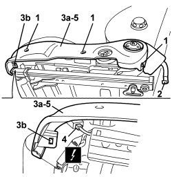

7045A43 FRONT SEAT EXTERIOR GUARD (ONE), LEFT OR RIGHT - R.R
- Path
- Procedures > 70 FITTINGS > 7045 FRONT SEATS > 7045A FRONT SEAT ASSEMBLY > 7045A43 FRONT SEAT EXTERIOR GUARD (ONE), LEFT OR RIGHT - R.R
- Kind
- repair procedure (removal / refitting; the operation number is the code)
- Applies to
- all engines; all production periods
- Interactive page
- https://sloeber94.github.io/elrnDB/alfa/159/en/#/939011294
Applies to: all engines; all production periods
 Removing
Removing
 Refitting
RefittingOp. 7045A24 FRONT SEAT BACKREST ANGLE ADJUSTMENT KNOB (ONE), LEFT OR RIGHT - R.R.
Op. 7045A56 DRIVER'S SEAT HEIGHT ADJUSTMENT DEVICE CONTROL LEVER - R.R
1. Loosen outer guard fixing bolts.
2. Disconnect the backrest trim link.
3. Remove the outer cover (3a) releasing the retainer (3b).
4. Disconnect the electrical connection for the heated seat switch.
Description | Component |
|---|---|
DRIVER'S SEAT HEATER SWITCH | |
PASSENGER SEAT HEATER SWITCH |
5. Recover the outer guard.

Applies to: all engines; all production periods
Refitting
Removing- Check that the outer guard is not damaged.
- Connect the electrical connection for the heated seat switch.
- Position the outer guard and do up the retainer.
- Connect the backrest trim link.
- Tighten the outer guard fixing bolts.
Op. 7045A56 DRIVER'S SEAT HEIGHT ADJUSTMENT DEVICE CONTROL LEVER - R.R
Op. 7045A24 FRONT SEAT BACKREST ANGLE ADJUSTMENT KNOB (ONE), LEFT OR RIGHT - R.R.
Applies to: all engines; all production periods; only with equipment: Electric seats
Removing
Refitting- Raise the seat until it is in the upper end of travel position.
1. Loosen outer guard fixing bolts.
2. Move trim (2a) slightly releasing retainers (2b).
3. Disconnect the electrical connections (3a, 3b, 3c).
Description | Component |
|---|---|
DRIVER'S SEAT HEATER SWITCH | |
PASSENGER SEAT HEATER SWITCH | |
DRIVER SIDE SEAT MOVEMENT CONTROLS | |
PASSENGER SIDE SEAT MOVEMENT CONTROLS |
4. Recover the outer guard with elecric controls

Applies to: all engines; all production periods; only with equipment: Electric seats
Refitting
Removing- Check that the outer guard with electric controls is not damaged.
- Position the outer guard and connect the electrical connections.
- Attach the retainers for the outer guard.
- Tighten the outer guard fixing bolts.
- Check the seat electric controls operate correctly.
Topics linked from this page (6)
- 7045A24 FRONT SEAT BACKREST ANGLE ADJUSTMENT KNOB (ONE), LEFT OR RIGHT - R.R.
- 7045A56 DRIVER'S SEAT HEIGHT ADJUSTMENT DEVICE CONTROL LEVER - R.R
- H066 DRIVER'S SEAT MOVEMENT CONTROLS
- H067 PASSENGER SEAT MOVEMENT CONTROLS
- I065 DRIVER'S SEAT HEATING SWITCH
- I066 PASSENGER SEAT HEATING SWITCH
Topics that link to this page (15)
- 7045A36 DRIVER'S SEAT MANUAL HEIGHT ADJUSTMENT DEVICE - R.R
- 7045A47 BACKREST ADJUSTMENT DEVICE FOR ONE SEAT, LEFT OR RIGHT - R.R.
- 7045A59 FRONT SEAT BACK INCLINATION ADJUSTING DEVICE (ONE), LH OR RH - R R
- 7045A86 FRONT SEAT FRAME (ONE), LEFT OR RIGHT, R.R.
- 7045D10 TRIM FOR ONE FRONT SEAT LH OR RH - R.R
- 7045D11 TRIM OF ONE FRONT SEAT LH OR RH RR WITH SEAT REMOVED
- 7045D18 FRONT SEAT CUSHION SPRINGING (ONE), LH OR RH - R R
- 7045D20 FRONT SEAT CUSHION COVER, LEFT OR RIGHT - R.R.
- 7045D21 FRONT SEAT CUSHION COVER, LEFT OR RIGHT - R.R. WITH SEAT REMOVED
- 7045J33 FRONT SEAT SWINGING MOTOR, (ONE) LH OR RH - R R AFTER CHECKING THE ELECTRIC CIRCUIT
- 7045J34 FRONT SEAT BACKREST ANGLE MOTOR, LEFT OR RIGHT - R.R. FOLLOWING ELECTRICAL WIRING CHECK
- 7045J36 SEAT MOVEMENT ECU R R FOLLOWING ELECTRICAL CIRCUIT CHECK
- 7045M10 FRONT SEAT HEATING SYSTEM SWITCH, LEFT OR RIGHT - R+R
- 7045M22 HEATER PAD FOR FRONT SEAT CUSHION, LEFT OR RIGHT - R.R. FOLLOWING ELECTRICAL CIRCUIT CHECK
- 7065A34 PASSENGER PRESENCE SENSOR ON FRONT SEAT FOR INDICATING SEATBELT UNFASTENED R R